1. Marketing Home (Pre‑login SEO) Wireframe
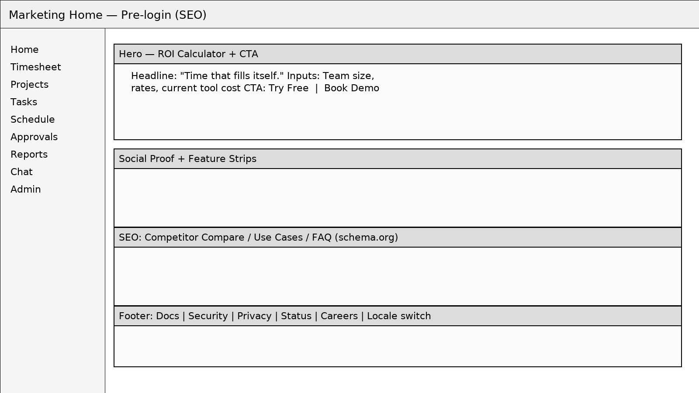
Marketing Home (Pre‑login SEO) — low‑fidelity layout for flows and IA validation.
2. Home — Today Wireframe
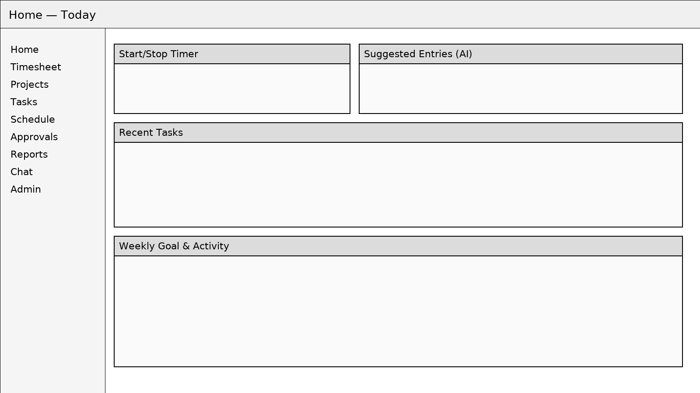
Home — Today — low‑fidelity layout for flows and IA validation.
3. Task Board (Kanban) Wireframe
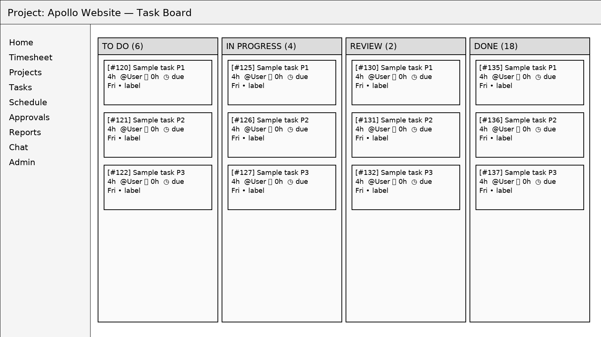
Task Board (Kanban) — low‑fidelity layout for flows and IA validation.
4. Planning Timeline / Gantt Wireframe
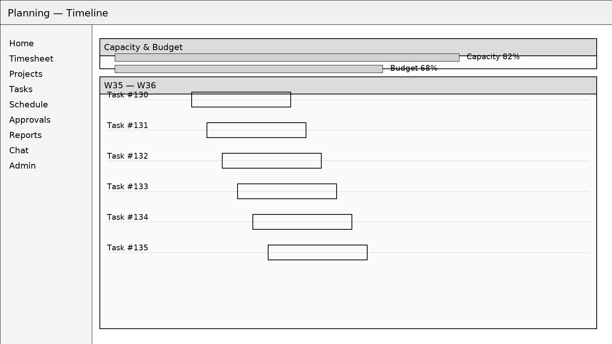
Planning Timeline / Gantt — low‑fidelity layout for flows and IA validation.
5. Chat with @ai Wireframe
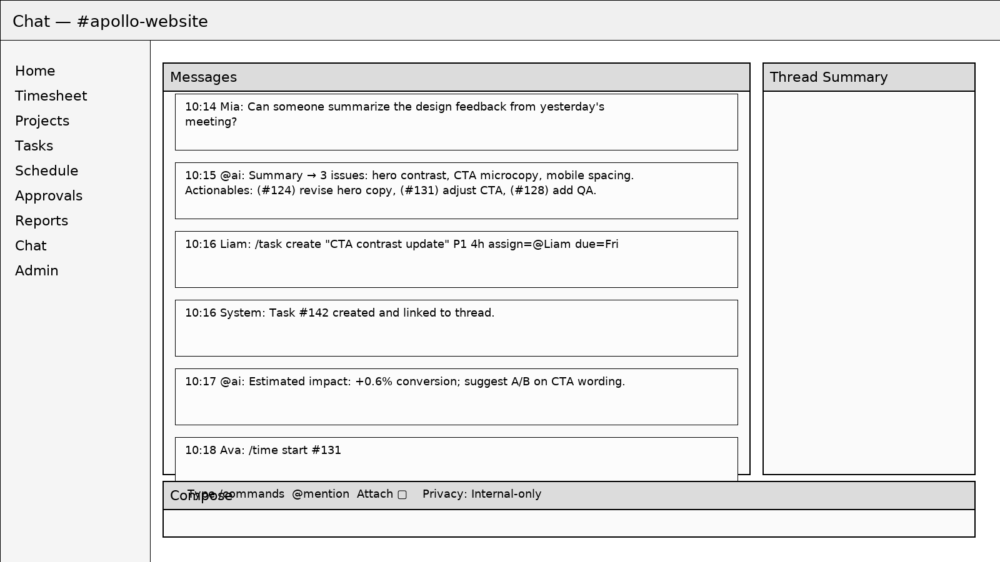
Chat with @ai — low‑fidelity layout for flows and IA validation.
6. Weekly Timesheet Wireframe
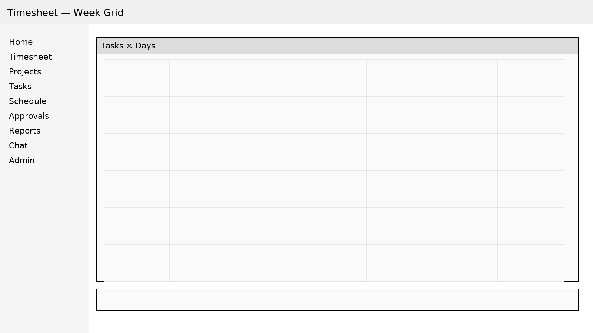
Weekly Timesheet — low‑fidelity layout for flows and IA validation.
7. Approvals & Exceptions Wireframe
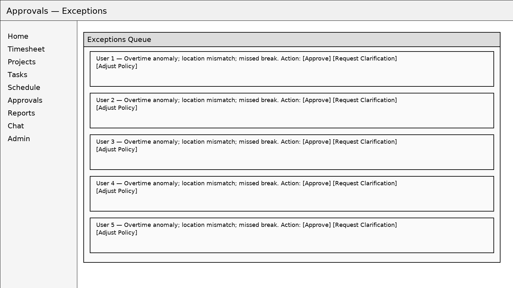
Approvals & Exceptions — low‑fidelity layout for flows and IA validation.
8. Reports & Insights Wireframe
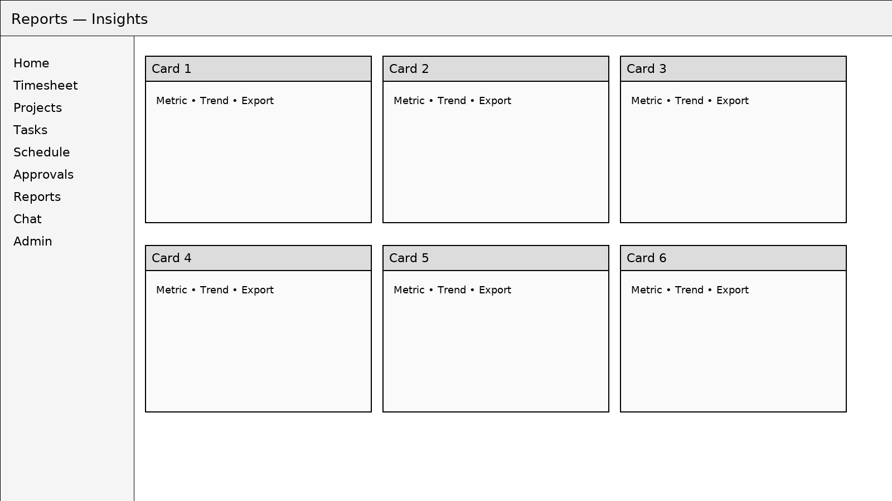
Reports & Insights — low‑fidelity layout for flows and IA validation.
9. Kiosk (Clock‑in/out) Wireframe
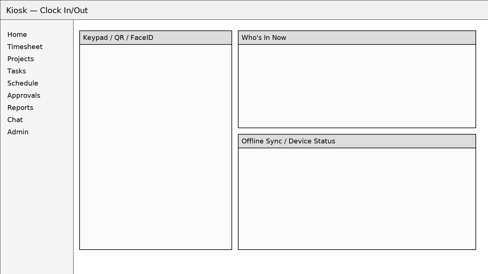
Kiosk (Clock‑in/out) — low‑fidelity layout for flows and IA validation.
10. Worker 360 (Performance) Wireframe
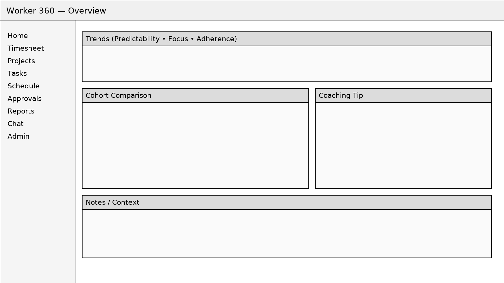
Worker 360 (Performance) — low‑fidelity layout for flows and IA validation.
11. Team Heatmap Wireframe
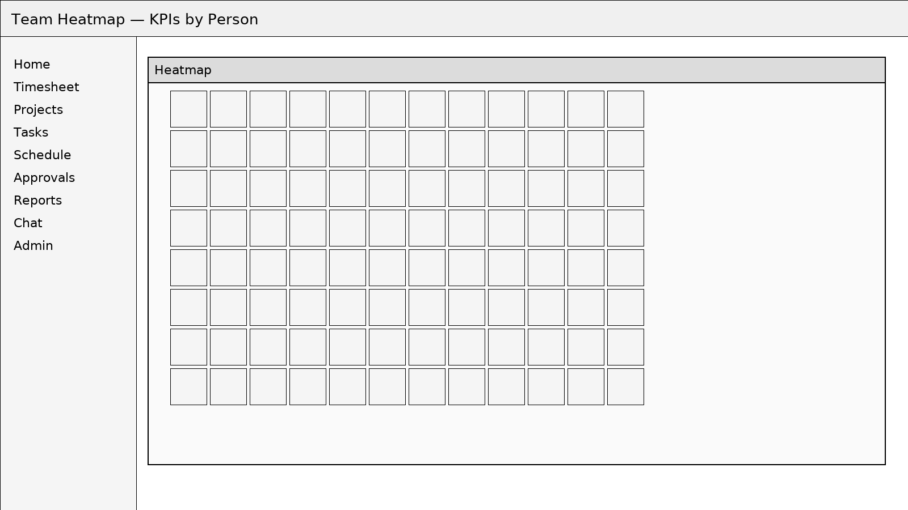
Team Heatmap — low‑fidelity layout for flows and IA validation.
12. Anomaly Radar Wireframe
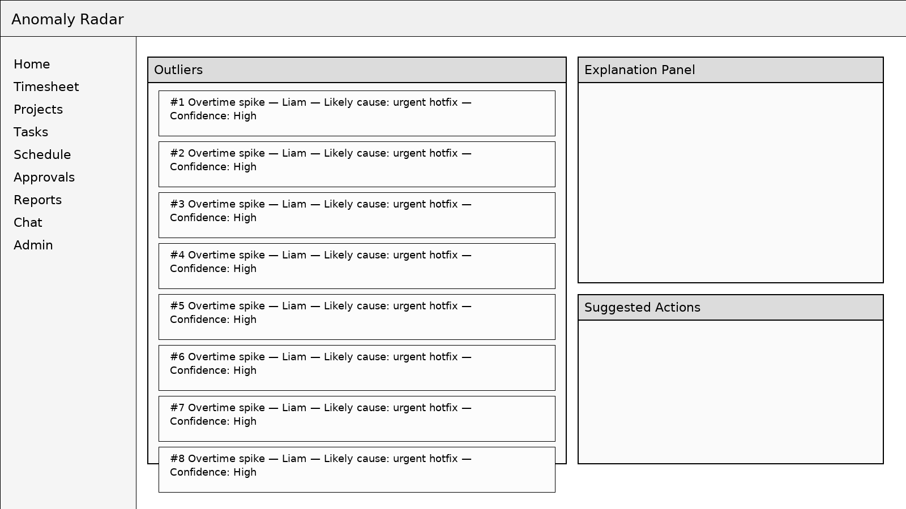
Anomaly Radar — low‑fidelity layout for flows and IA validation.